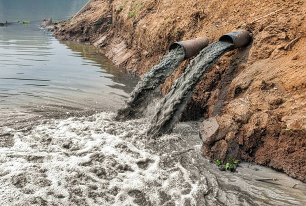

Water Pollution
<- Back to About

What is Water Pollution?
Water pollution occurs when harmful substances such as chemicals, waste materials, plastics, and sewage contaminate rivers, lakes, oceans, and groundwater. Polluted water becomes unsafe for humans, animals, and plants, causing serious environmental and health problems.
Major Sources of Water Pollution
- Industrial waste and chemicals
- Untreated sewage and wastewater
- Plastic waste and littering
- Agricultural fertilizers and pesticides
- Oil spills from ships and industries
- Household detergents and cleaning products
Common Water Pollutants
Several harmful substances contribute to water pollution and affect aquatic ecosystems.
- Plastic and microplastics
- Heavy metals such as lead and mercury
- Industrial chemicals
- Oil and petroleum products
- Sewage and human waste
- Agricultural pesticides and fertilizers
Effects on Human Health
Contaminated water can spread diseases and negatively affect human health.
- Cholera and typhoid
- Diarrheal diseases
- Skin infections
- Poisoning from toxic chemicals
- Kidney and liver damage
- Long-term health complications
Impact on Aquatic Life
Water pollution severely affects fish, plants, and other aquatic organisms.
- Death of fish and marine animals
- Destruction of aquatic habitats
- Reduced oxygen levels in water
- Disruption of food chains
- Coral reef damage
Water Pollution in Oceans
Millions of tons of plastic waste enter the oceans every year. Marine animals often mistake plastic for food, leading to injury or death. Oil spills and chemical waste further damage marine ecosystems and threaten biodiversity.
Ways to Reduce Water Pollution
- Dispose of waste properly.
- Reduce plastic usage.
- Treat industrial wastewater before release.
- Avoid dumping garbage into rivers and lakes.
- Use environmentally friendly products.
- Promote recycling and waste management.
- Reduce the use of harmful pesticides and fertilizers.
What Students Can Do
- Use reusable water bottles.
- Avoid littering near water bodies.
- Participate in clean-up drives.
- Spread awareness about water conservation.
- Practice responsible waste disposal.
Did You Know?
Only about 3% of the Earth's water is fresh water, and much of it is locked in glaciers and ice caps. This makes protecting clean water resources extremely important for future generations.
Conclusion
Water is essential for all forms of life. Preventing water pollution requires cooperation between governments, industries, and individuals. By adopting responsible habits and supporting environmental protection efforts, we can ensure clean and safe water for everyone.
© 2026 Environmental Awareness Website
Created by Shoumil